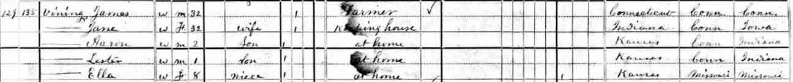
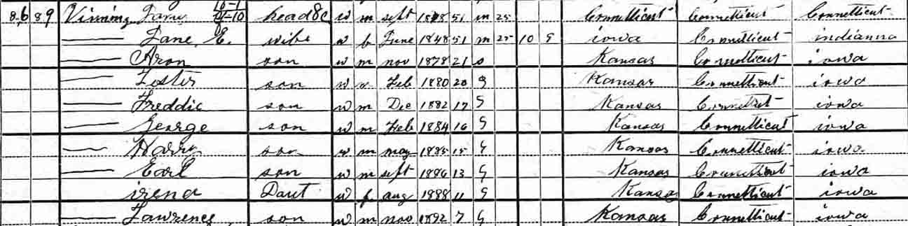
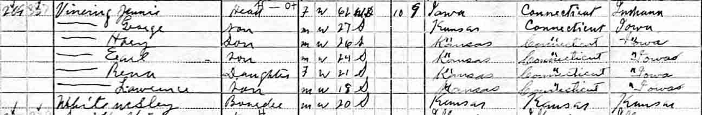
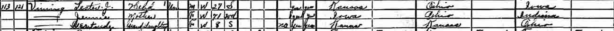
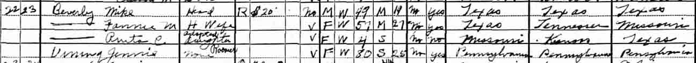
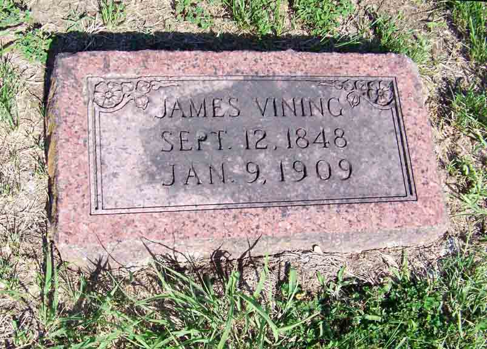

Census Data
| 1880 | 1890 | 1900 | 1910 | 1920 | 1930 | 1940 | |
| James M. Vining Jr. | 32 | ? | 51 | dead | |||
| [Jane or Jeannie] (Lindsley) Vining | 32 | ? | 51 | 61 | 71 | 80 [see note below] |
dead |
| Arthur Vining | dead | ||||||
| Aaron Lee Vining | 2 | ? | 21 | married and living in separate household | |||
| Ernest Lester Vining | 1 | ? | 20 | married and living in separate household | 27 [see note below] |
||
| Elnore Vining | ? | married and living in separate household | |||||
| Fred Nathaniel Vining | ? | 17 | living in separate household | married and living in separate household | |||
| George M. Vining | ? | 16 | 27 | [married and living in separate household ?] | |||
| Harry Vining | ? | 15 | 26 | living in separate household | |||
| Earl Vining | ? | 13 | 24 | widowed and living in separate household | dead | ||
| Irene Vining | ? | 11 | 21 | [married? and living in separate household] | |||
| Lawrence James Vining | 7 | 18 | ? | married and living in separate household |





Death Data
Gravestone for James M. Vining Jr., in Pleasant Valley Cemetery, Wilson County, Kansas (from Find A Grave):